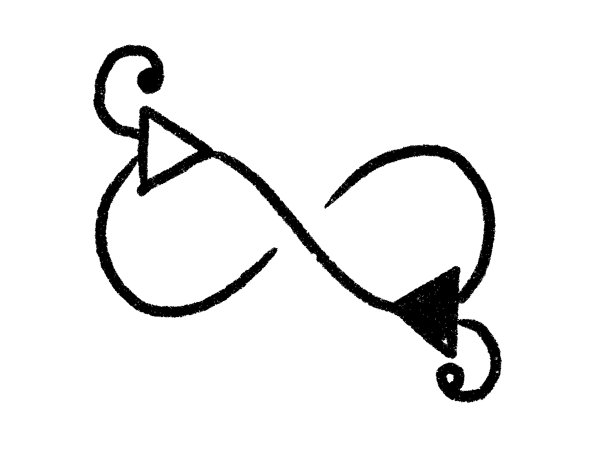
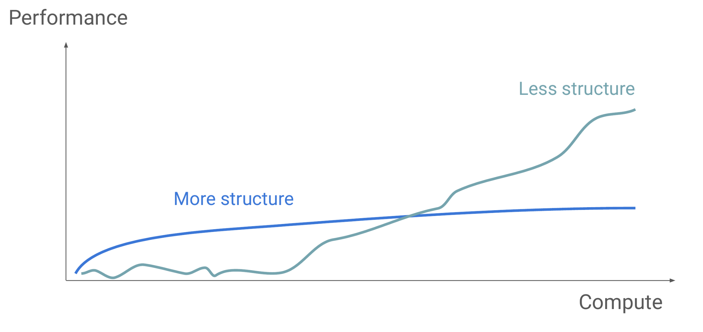
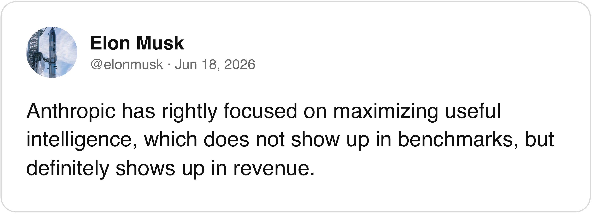

A different route to AGI
Higher Order Company
Problem
By OpenAI’s own definition.
The best AI today, on real paid freelance projects
21% delivered at human level
79% not delivered
Up from 2.5% in Oct 2025. Even rising, most paid work still fails.
OpenAI defines AGI as “highly autonomous systems that outperform humans at most economically valuable work.”
Every frontier model today is built on the same architecture: the transformer.
Sources: OpenAI Charter ↗ · Remote Labor Index, Scale AI & CAIS, top model as of Nov 2026 ↗ · Transformer: Attention Is All You Need, Vaswani et al., 2017 ↗
Solution

Figure: H. W. Chung, “Don’t teach. Incentivize.”, MIT EI Seminar, 2024, slide 9.
“The story of deep learning is this: empirically, old simple methods, which were usually invented in the 80s and the 90s, when scaled up on very large clusters, work really well. That happened with computer vision, that happened with normal supervised learning, and it also happened with RL.”
— Ilya Sutskever, co-founder of OpenAI and SSI, in a talk
We’ll scale Symbolic AI to GPU clusters using HVM and Bend
Business model

If research works, business is straightforward
Raising
On SAFEs, at a $120M post-money cap
$100k minimum check
First come, first served: investors@higherorderco.com
All the money goes to research
This is a high-risk investment. You are investing in whatever comes out of our symbolic AI research; Bend will likely remain open source and free. Most early-stage investments return nothing, and we don’t yet have a clear long-term revenue path. We believe in our technology and our hustle, but that is no guarantee of success.
Team
Victor Taelin, founder, CEO, created HVM, Bend and Kind
Vitor Chiarelli Neves, cofounder
Nicolas Abril, researcher
Lorenzo Battistela, researcher
Paulo Cavalcanti, researcher
The bitter lesson: the more humans hand-engineer an AI, the better it does at small scale, and the worse it scales. In the long run, the simplest method with the most compute wins. So we take that to the extreme. The simplest method there is: proof synthesis, run on massive compute.
That space holds every possible AI, including ones far better than anything a human could design, or even understand. The only question is how much compute it takes to find one. A learner like nanoGPT may fit in about 1,200 bits. Made by humans, it is surely far from the best. If the best is much smaller, an NVL72 can plausibly mine it.
It’s a big bet, on purpose. At $120M, success means about $2T: over 10,000x. Any chance above 0.01% makes it a good bet. We think it’s far higher, for the same reason GPT-2 went from a useless autocomplete to the heart of the AI industry: scale.
Higher Order Company · investors@higherorderco.com